GHOST · THE MARK · ROUND 2 · NOVEMBER 2026
Lose the tail, keep the hands.
The operator: “the tail … makes it look like an inverted raindrop, or frankly something inappropriate. I like the first option with the hands.” The light, the night tile, the ring and the state colours stay as round 1 drew them; this round is the silhouette. The test that matters is the shape alone, solid black, at 64 and 16 px.


1a · Rounded hem
7/10
Wisp's head and shoulders, the bottom closed in three shallow round lobes, symmetric. The sheet ghost.
In the floating room: Floats as today; the hem ripples where the tail swung (a wave across the three lobes). Listening, reach, speaking and the yes are the ring's and the light's, unchanged.




 with the agents' shapes, unchanged
with the agents' shapes, unchanged1b · One round hem
3/10
The bottom closed in one soft curve.
In the floating room: As 1a with nothing to ripple: it can only squash.
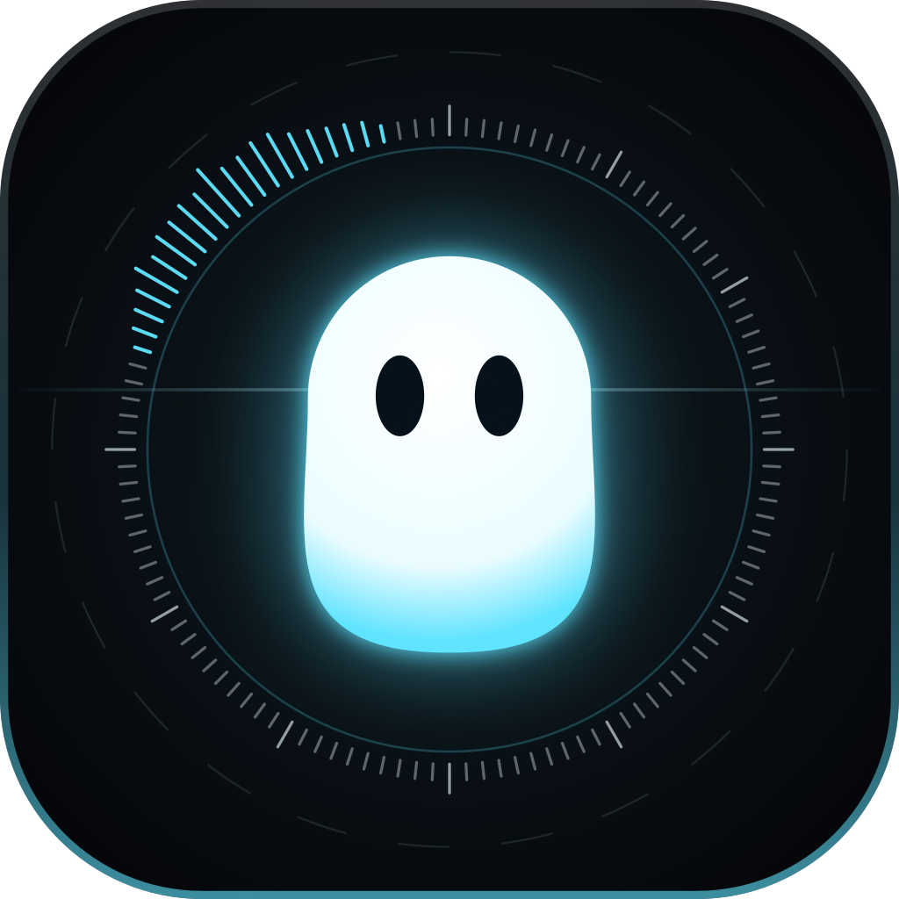




 with the agents' shapes, unchanged
with the agents' shapes, unchanged1c · Hem with hands recommended
8.5/10
1a with hands drawn as part of the body: two rounded mitts at the shoulders, lit with it, the right a little raised. From 32 px up; under 32 they would only widen the blob.
In the floating room: The live mascot already has arms (aL, aR): they become these mitts, so the wave on hover, the gesture while speaking and the arms down when offline all carry over. The hem's ripple replaces the tail's swing.




 with the agents' shapes, unchanged
with the agents' shapes, unchanged2 · Hands on today's tail
6/10
For comparison: what the hands do alone, on the body that has the tail.
In the floating room: Today's motion with mitts instead of lines.




 with the agents' shapes, unchanged
with the agents' shapes, unchanged3a · No bottom half, centred
7.5/10
Only the head and shoulders are drawn; the lower third dissolves into a pool of light. Nothing to be read as a tail or a hem.
In the floating room: The float is the best home for it: the body dissolves into the field's glow and rises out of it on arrival. It has no limbs, so the gestures go to the light and the ring.




 with the agents' shapes, unchanged
with the agents' shapes, unchanged3b · Rising from the frame
6/10
The head rises over the ring's edge, the bottom cut by it.
In the floating room: In the float there is no frame to rise from except the ring, so it would have to bring one; on a tile or a splash it is good.
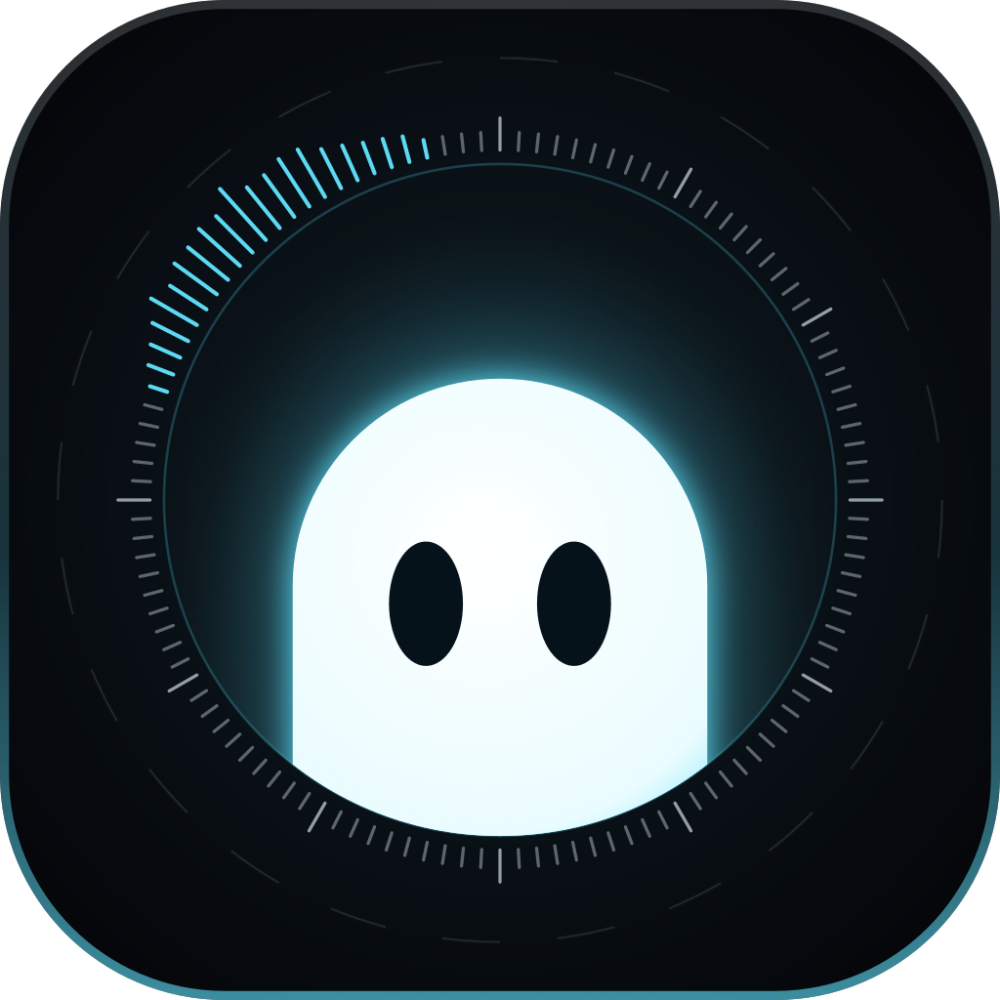




 with the agents' shapes, unchanged
with the agents' shapes, unchanged4 · Orb
5/10
Nearly round, fuller low on the right, leaning: a drop of light settling, the eyes the only feature.
In the floating room: Alive through the outline breathing and the light. It is every assistant's orb: the eyes are the only thing that is Ghost.
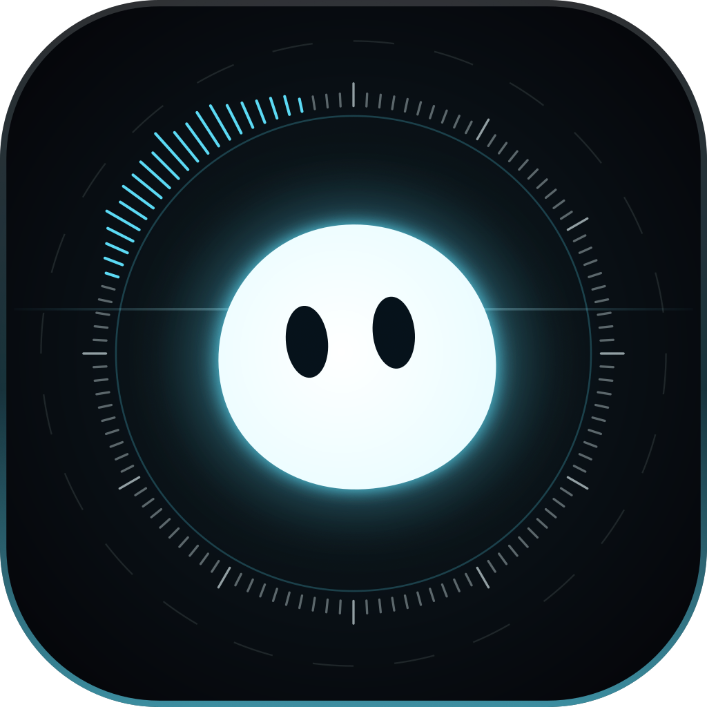




 with the agents' shapes, unchanged
with the agents' shapes, unchanged5 · Drift
7/10
1c with a lean (−5°) and the hem lower on the right: the round-1 sense of drift without a tail.
In the floating room: As 1c.




 with the agents' shapes, unchanged
with the agents' shapes, unchanged1c in every state the arc says what, the light says how; unchanged from round 1


The two strongest, alive the arrival and speaking, in the ring
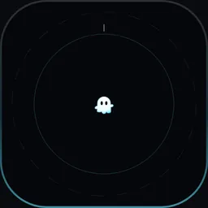
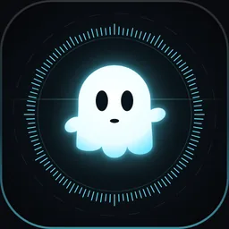
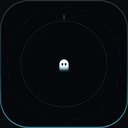
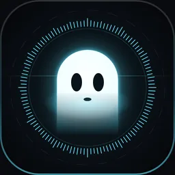
Recommendation: 1c, the hem with hands
It passes the black test at 64 and at 16 as a ghost, and with the hands as someone, which is what the operator liked in today's large icon. No tail, so no drop and nothing rude. Everything round 1 got right stays: the night tile, the ring and its arc, the light by state. Under 32 px the hands drop and the hem alone is the mark (round 1's rule: one system, levels of detail). The honest cost: a three-lobed hem is the most familiar ghost there is (the emoji, the arcade). The light, the ring and the hands are what make it Ghost's and not anyone's; on its own, in black, it is generic.
| Out of 10, against the floating room (9) | |
|---|---|
| Today | 4: a drop at small sizes |
| Round 1 (II) | 8.5 for the system, but its silhouette fails the test: a comma |
| 1c · Hem with hands | 8.5: reads as a ghost and a character at every size; generic in black |
| 3a · No bottom half | 7.5: the most like the room, the least like a mascot; a tombstone in black |
| 1a · Hem, 5 · Drift | 7 each |
| 3b · Peek, 2 · Tail with hands | 6 each |
| 4 · Orb | 5: every assistant's orb |
| 1b · One round hem | 3: a tooth |
The live mascot (packages/ui/src/wisp.ts)
body(s)becomeshem(w, ph): the same head, the three lobes' depths moving as a wave across the hem.swis renamed to the ripple's strength and keeps every place it is driven today (idle, listening, speaking, hold, the gesture); its phase runs on the clock, so the hem flows instead of swinging.- Arms become mitts:
aL/aRand every pose that sets them are kept; only the drawing changes, from two stroked lines to two filled ovals hinged at the shoulders, inside the body's light. They show from 32 px (the props detail is 40 today; 32 is fine for mitts). - The rest pose is upright, the right mitt a little raised. The talking mouth, the grin, the blink, the thinking dots and the "z" stay.
GHOST_PATHandGHOST_PATH_SMALLcome from the new body, so the favicon generator (site/src/pages/favicon.svg.ts) and the site's wordmark follow without edits.
The agents' shapes (agentShapes.ts)
- None of them shares Wisp's tail: Drop, Bell, Hood, Cloud, Lantern, Star and Moth are their own silhouettes. Only Wisp and an agent with no look (drawn as Wisp in its colour) change.
- The hem makes Wisp their sibling: Bell, Cloud and Hood already end in a hem. Wisp stays distinct by its straight sides and round lobes (Bell flares, Hood is jagged, Cloud is puffed on top) and, from 32 up, the hands.
- Drop gets lonelier: it was Wisp's closest relative and is the shape the operator objected to. Keep it as an agent's shape; it no longer stands for Ghost.
The published imagery
- The README's floating-room pictures and the loop (
docs/screenshots/floating-*.webp) show the live Wisp with its tail: rerunmake screenshotsafter the mascot changes. The site'sog.jpghas no script behind it (captured once with the site): capture it again, or replace it with round 1's reach card. - The site's float demo (
site/src/components/FloatDemo.tsx) renders the real floating room, so it follows the mascot. - The icons and favicons are round 1's rollout list, with this body.